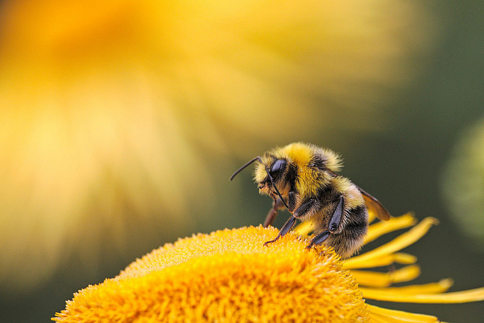
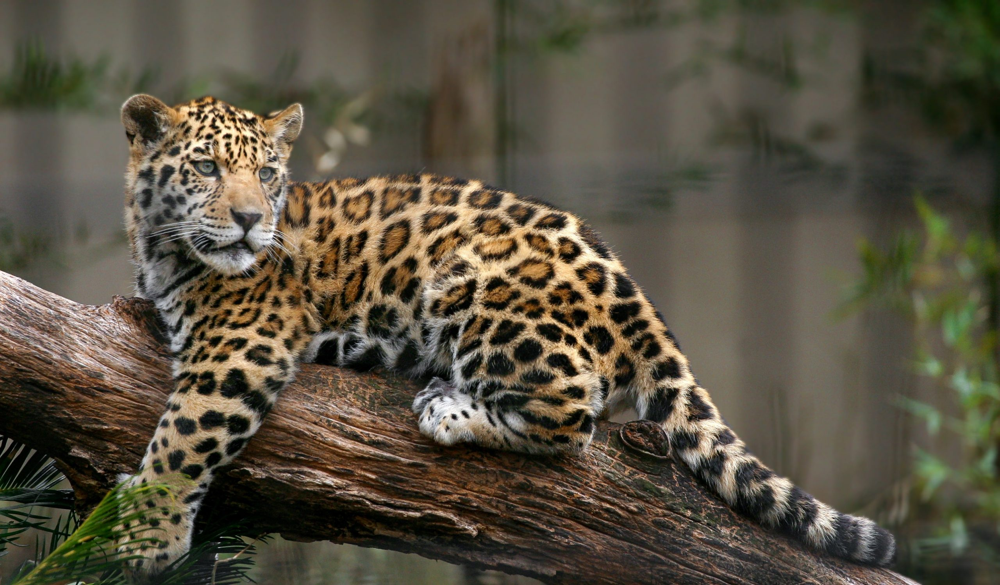
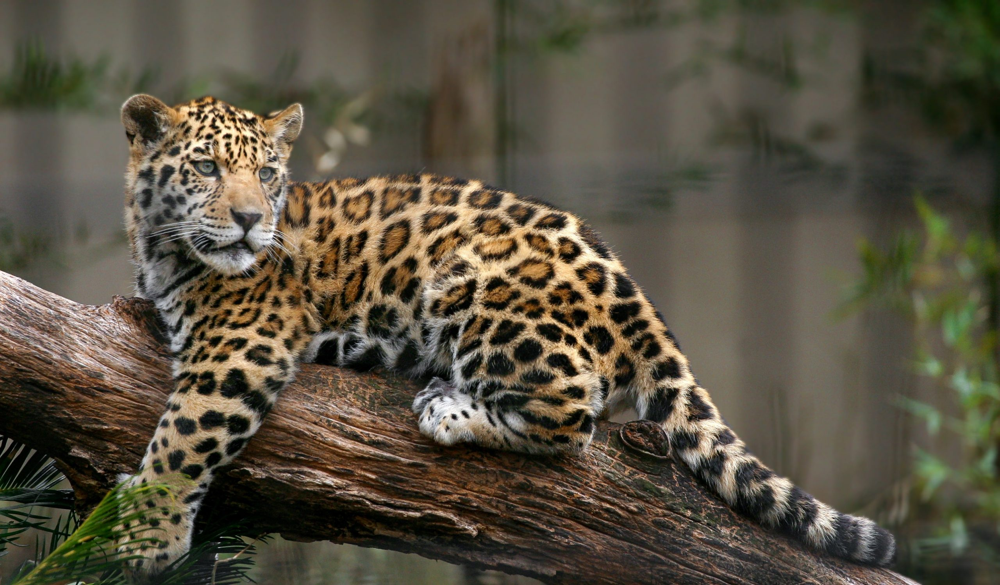
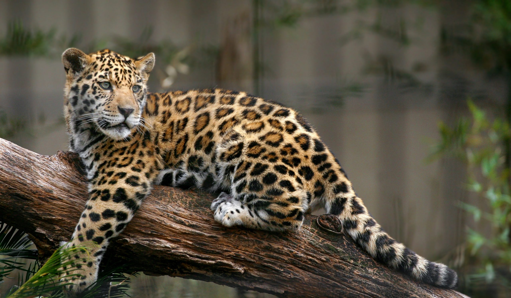

PI - Pictures & Images
Inicio
Buscador
Buscar
Usuario Identificado
Logout
Últimas fotos subidas

Abeja
Bosque
Atardecer en el bosque
Plantas

Lindo minino
 Bosque
Bosque
 Atardecer en el bosque
Atardecer en el bosque
 Plantas

Lindo minino
Plantas

Lindo minino